1. 온톨로지 7요소의 의미
YABOAZ에서 온톨로지는 단순한 데이터 모델이 아닙니다. 현장의 언어, 업무 흐름, 사람의 판단 기준, 시스템 데이터와 실행 행동을 하나의 의미 구조로 연결하는 실행 지식 구조입니다.
사람·장소·장비·문서·업무·사건·자원
위치·상태·등급·시간·수량·담당자
소속·포함·사용·발생·영향·책임
정상·대기·위험·승인·완료·중단
감지·요청·변경·승인·실패·완료
기준·제한·승인·금지
알림·추천·승인요청·배정·차단·보고
온톨로지는 AI가 현장을 이해하고 판단하며 행동하도록 만드는 실행 지식 구조입니다.
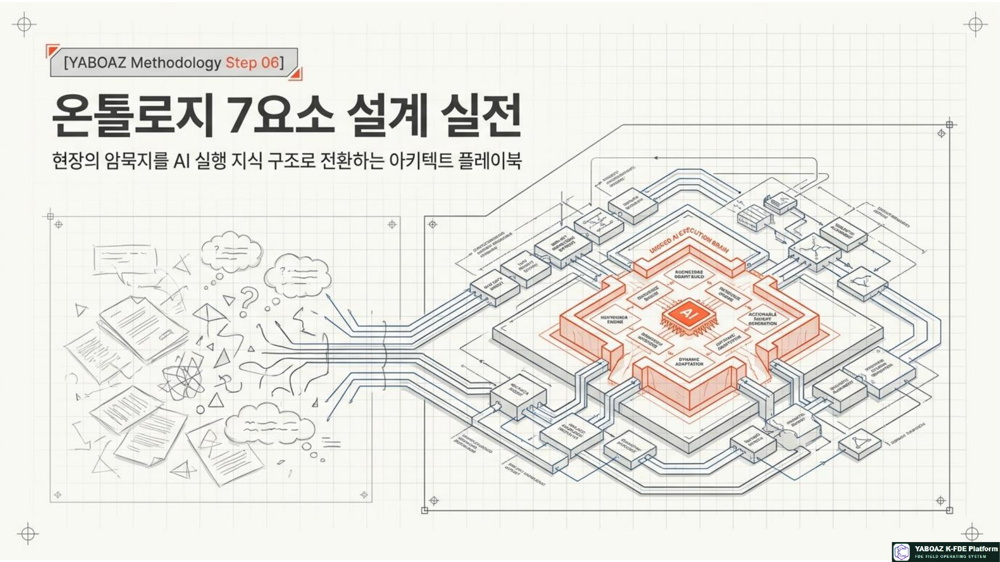
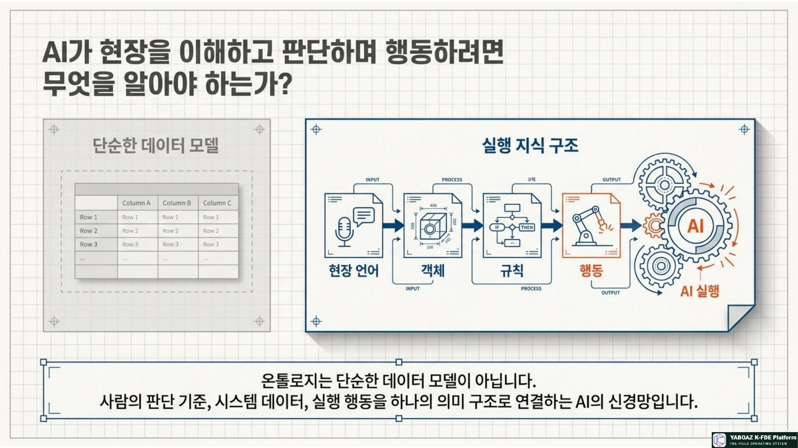
2. 06단계의 위치와 입력·산출물
1~5단계가 문제와 지식을 수집하는 과정이라면 6단계는 이를 AI 실행 구조로 바꾸는 첫 번째 구조화 단계입니다.
입력 자료
산출물
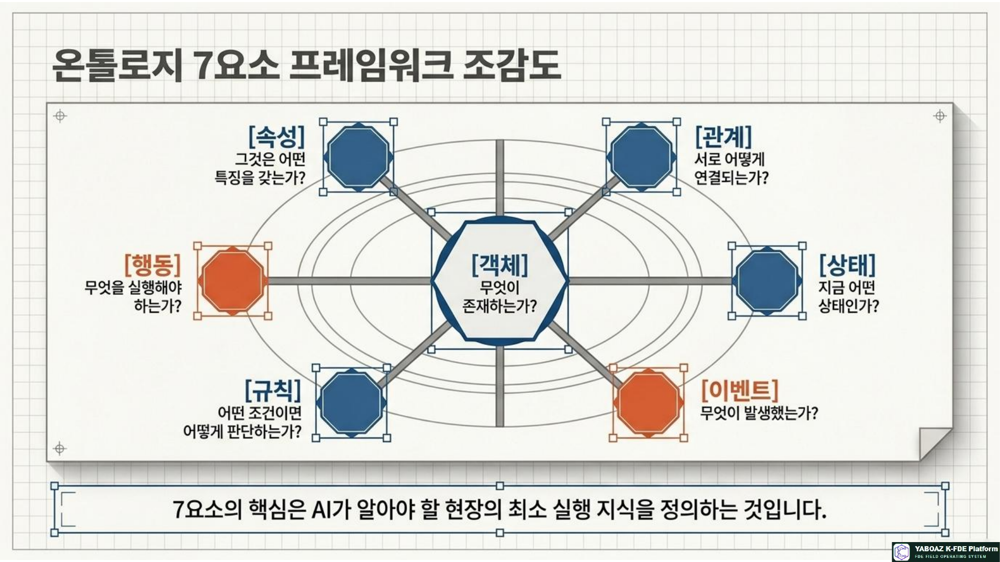
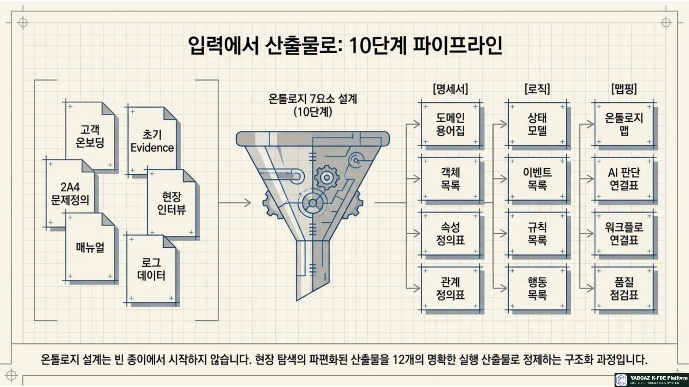
3. 온톨로지 설계 10단계
도메인 범위 확정
핵심 문제·업무·사용자·데이터·AI 행동·제외 범위·KPI를 정합니다.
도메인 용어 수집
현장 표현, 매뉴얼, 화면, 엑셀, 로그, 인터뷰와 판단 용어를 모읍니다.
객체 후보 추출
현장에 존재하고, 반복되며, 상태 변화·판단·행동·KPI와 연결되는 대상을 찾습니다.
핵심 객체 선정
문제 관련성, 반복성, 상태 변화, 관계 중심성, 판단·행동·성과 연결성으로 보류와 선정 대상을 구분합니다.
객체별 속성 정의
ID·위치·시간·상태·담당자·위험도·권한·출처와 KPI 필드를 정의합니다.
객체 간 관계 정의
포함·관리·영향·발생·실행·승인·출처·성과 관계와 방향·다중성을 정합니다.
상태와 상태 전이
객체별 상태, 상태를 바꾸는 이벤트, 승인자, 기록과 KPI 영향을 정의합니다.
이벤트 정의
업무 시작·상태 변화·알림·승인·감사·측정을 발생시키는 사건을 정리합니다.
규칙과 행동 정의
조건·판단·행동·승인·기록의 형태로 판단 기준을 작성합니다.
AI·워크플로·MVP 연결
온톨로지 요소를 AI 질문, 입력 데이터, Human Gate와 실제 실행 행동에 연결합니다.
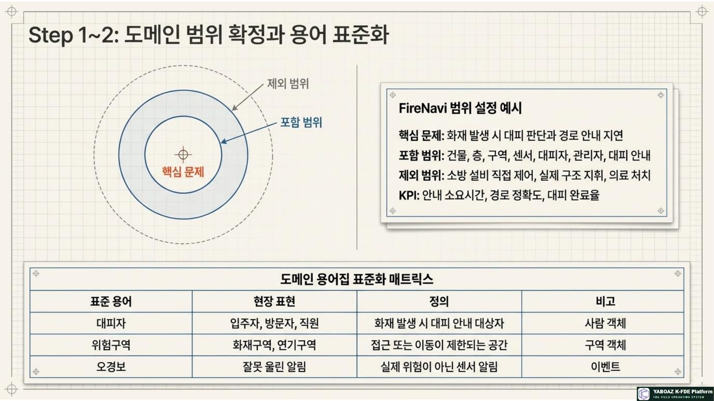
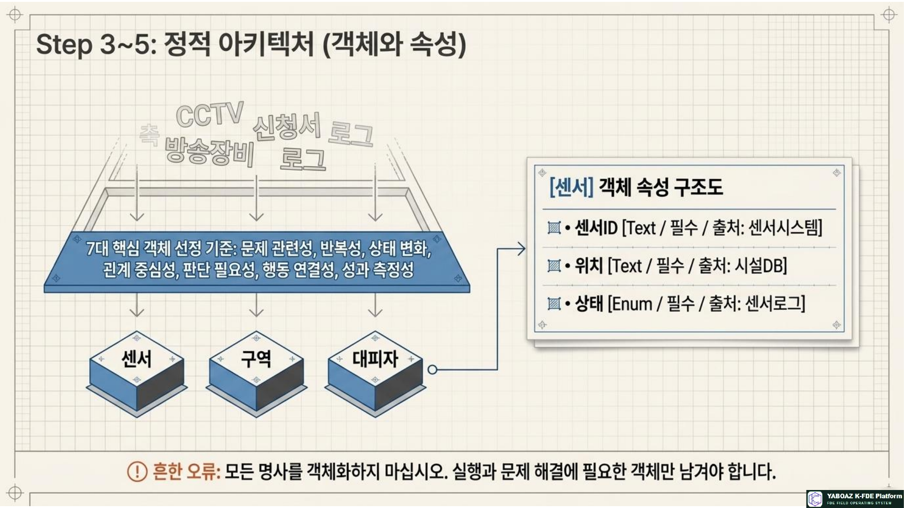
4. 7요소 설계 실전
도메인 용어집
| 용어 | 현장 표현 | 정의 | 관련 객체 |
|---|---|---|---|
| 대피자 | 입주자·방문자·직원 | 화재 시 안내 대상자 | 사람 |
| 위험구역 | 화재구역·연기구역 | 접근·이동 제한 공간 | 구역 |
| 대피경로 | 피난경로·이동경로 | 안전한 이동 경로 | 경로 |
| 오경보 | 잘못 울린 알림 | 실제 위험이 아닌 센서 알림 | 이벤트 |
객체와 속성
| 객체 | 속성 | 타입 | 필수 | 출처 |
|---|---|---|---|---|
| 센서 | ID·위치·상태 | Text·Enum | 필수 | 센서 시스템 |
| 구역 | 층·위험도·수용인원 | Text·Number·Enum | 필수 | 시설 DB·AI |
| 대피자 | 위치·유형·취약성 | Text·Enum | 선택 | 출입·현장기록 |
| 경로 | 사용가능·혼잡도 | Boolean·Number | 필수 | 현장 상태 |
관계와 상태
| 주체 | 관계 | 대상 | 상태·전이 |
|---|---|---|---|
| 센서 | 설치됨 | 구역 | 정상 → 감지 → 오류 |
| 구역 | 연결됨 | 경로 | 정상 → 주의 → 위험 → 차단 |
| 대피자 | 위치함 | 구역 | 대기 → 대피중 → 완료 |
| 관리자 | 승인함 | 대피안내 | 승인대기 → 승인완료·반려 |
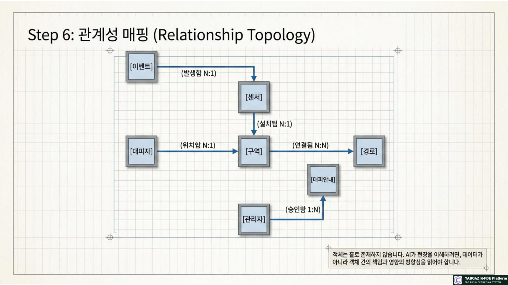
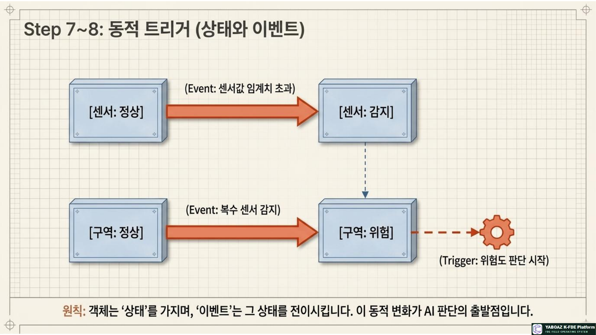
5. 이벤트·규칙·행동 설계
이벤트
| 이벤트 | 조건 | 상태 변화 | 후속 행동 |
|---|---|---|---|
| 센서 감지 | 센서값 임계치 초과 | 센서 감지·구역 주의 | 위험도 판단 |
| 위험 확인 | 복수 센서 감지 | 구역 위험 | 승인 요청 |
| 승인 완료 | 관리자 승인 | 안내 승인완료 | 알림 발송 |
| 경로 차단 | 연기 감지 | 경로 사용불가 | 대체 경로 추천 |
규칙 작성 공식
행동
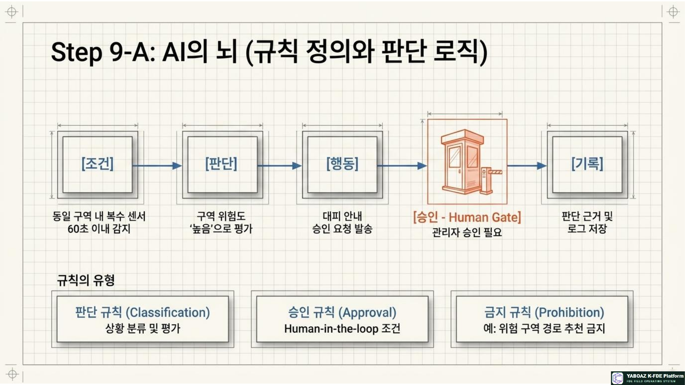
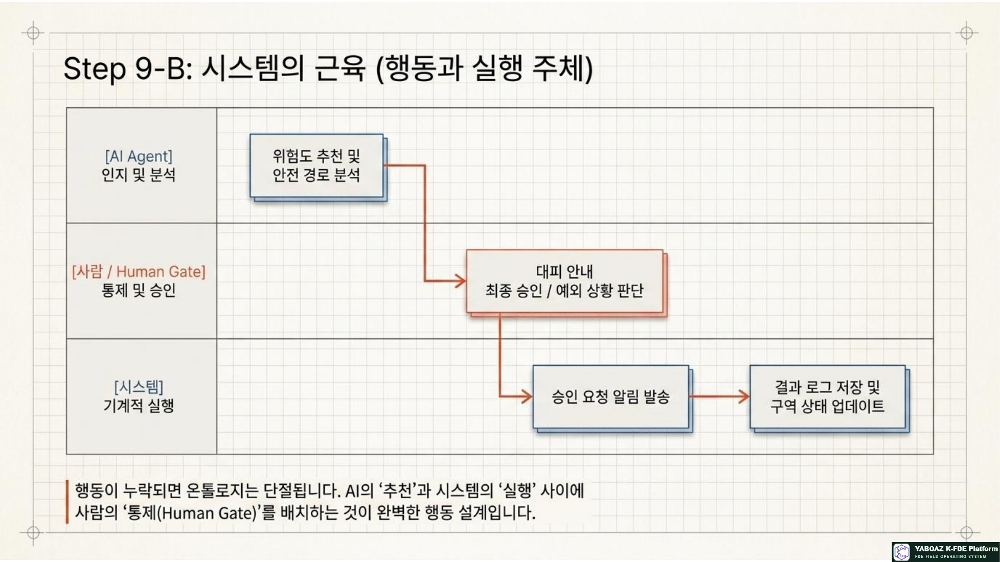
6. AI 판단·워크플로·MVP 연결
AI 판단 연결표
| 판단 질문 | 입력 객체 | 규칙 | 추천 결과 | Human Gate |
|---|---|---|---|---|
| 위험도는 높은가? | 센서·구역·상태 | 복수 감지 | 위험도 높음 | 관리자 확인 |
| 경로는 안전한가? | 경로·구역 | 위험구역 제외 | 대체 경로 | 승인 필요 |
| 누구에게 먼저 알릴까? | 대피자·위치 | 위험구역 근접순 | 대상자 목록 | 승인 필요 |
워크플로 연결
| 이벤트 | 상태 | 규칙 | 행동 |
|---|---|---|---|
| 센서 감지 | 구역 주의 | 복수 감지 확인 | 위험도 판단 |
| 위험 확인 | 구역 위험 | 대피 승인 필요 | 관리자 승인 요청 |
| 승인 완료 | 안내 승인 | 승인 후 발송 | 대피 알림 발송 |
온톨로지 7요소 통합 예시
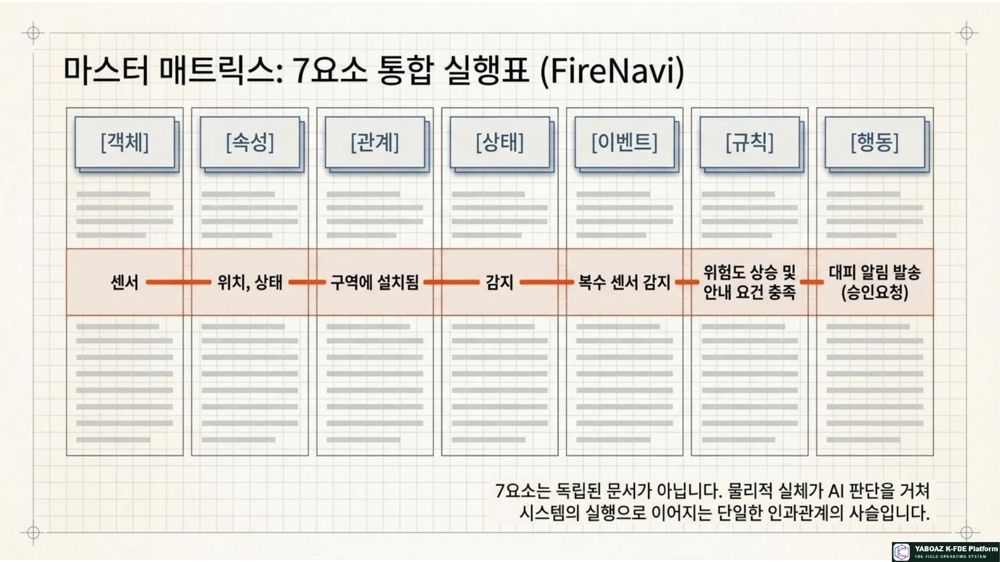
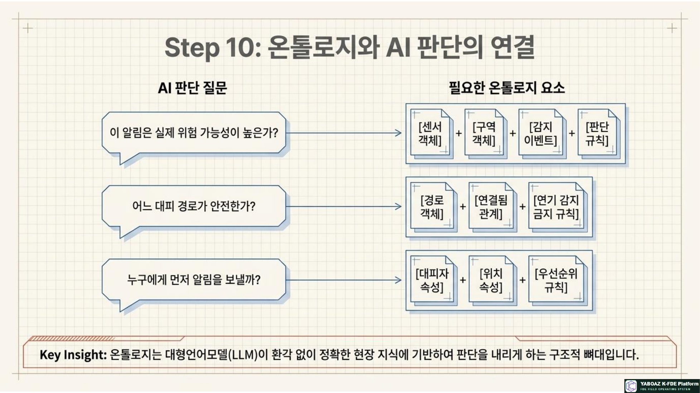
7. 품질 점검과 흔한 오류
| 오류 | 수정 방법 |
|---|---|
| 객체·속성 혼동 | 위험도는 구역 또는 경로의 속성으로 정의 |
| 이벤트·상태 혼동 | 화재 발생은 이벤트, 위험은 상태로 분리 |
| 모호한 규칙 | “위험하면 알림” 대신 조건·대상·승인·기록 정의 |
| 행동 없음 | 승인 요청·알림·배정·보고를 추가 |
| 관계 부족 | 포함·연결·책임·출처 관계 정의 |
| AI와 단절 | 판단 질문과 입력 온톨로지 연결 |
| 객체 과다 | 문제 해결·실행에 필요한 핵심 객체만 선정 |
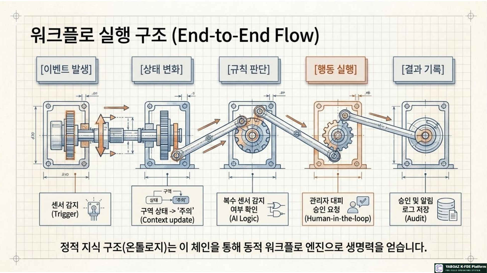
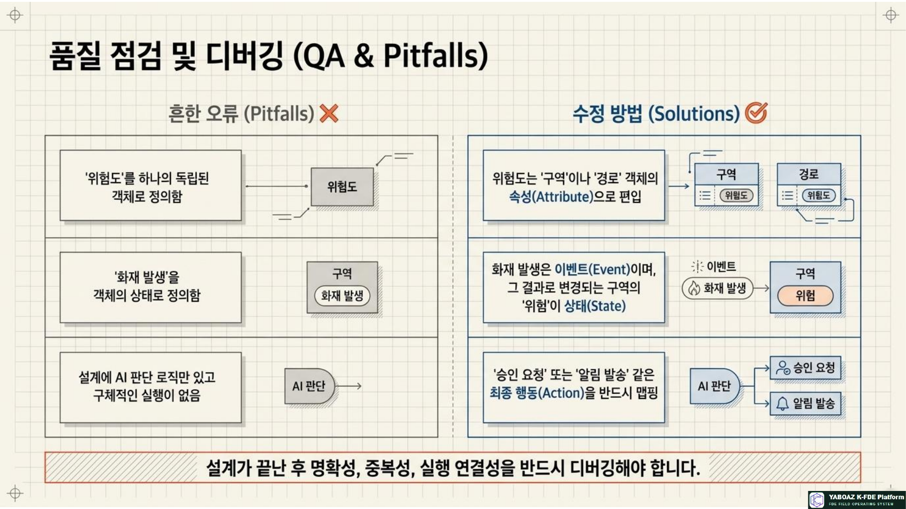
8. FireNavi 실습·평가·완료 기준
실습 목표
현장 탐색과 맞춤 인터뷰 결과를 바탕으로 FireNavi의 온톨로지 7요소를 도출하고 AI 판단과 워크플로로 연결합니다.
실습 산출물
| 평가 항목 | 배점 |
|---|---|
| 도메인 범위·객체 선정 | 25 |
| 속성·관계 정의 | 20 |
| 상태·이벤트 구분 | 15 |
| 규칙·행동의 실행 연결 | 20 |
| AI·Evidence 연결 | 20 |
06단계 완료 체크리스트
온톨로지 7요소는 데이터를 정리하는 작업이 아니라 현장 지식을 AI가 이해하고 사람이 승인하며 시스템이 실행할 수 있는 구조로 바꾸는 작업입니다.
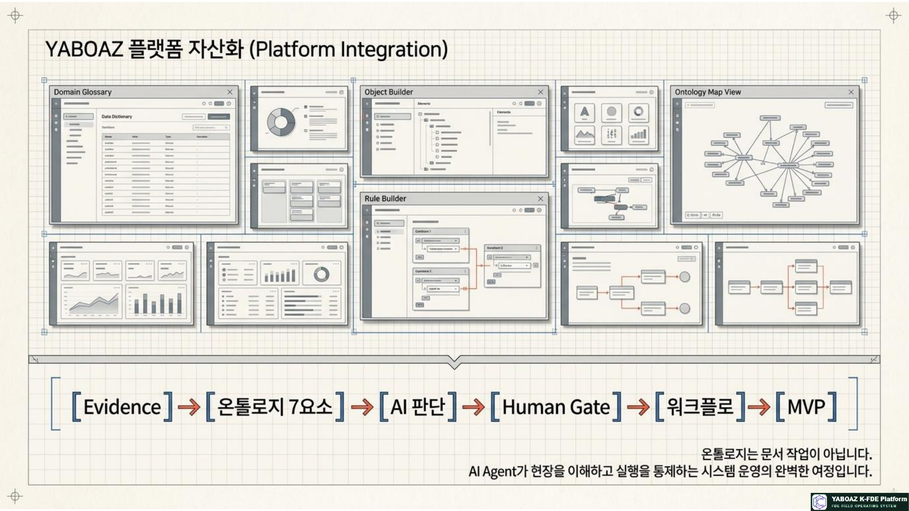